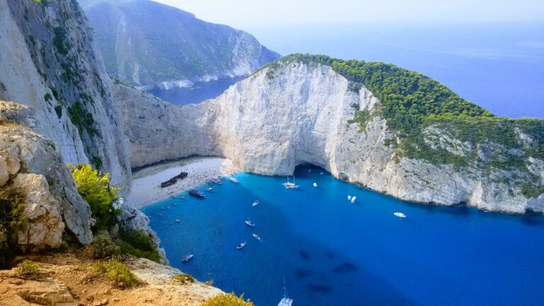
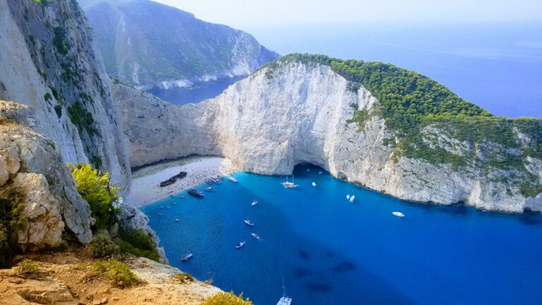

dubrovnik(Croatia)
 

Dubrovnik, Croatia is a coastal town that has become famous for its connection to the Japanese animated film, Porco Rosso, directed by Hayao Miyazaki. The town's well-preserved medieval architecture, narrow streets, and stunning coastal views served as major inspiration for the film's setting. Visitors to Dubrovnik can explore the town's historic landmarks and medieval walls, which offer panoramic views of the town and the sea. The nearby island of Lokrum also served as a filming location for the movie, and its lush vegetation and rocky coastline were used to create the film's stunning aerial scenes and dramatic dogfights. In addition to its association with Porco Rosso, Dubrovnik is also known for its rich history, vibrant culture, and stunning natural beauty, making it a popular destination for tourists from around the world.